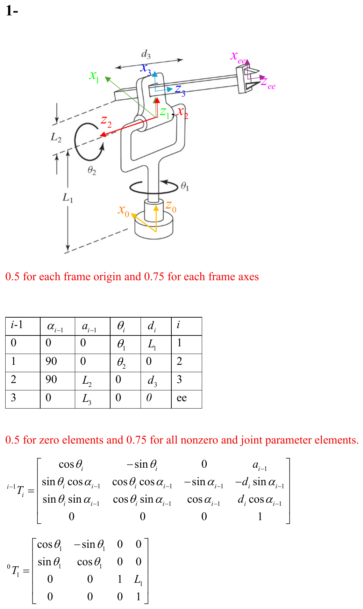

Midterm 1
PDF p.1Problem 1: Forward Kinematics — DH Parameters and Transformation Matrices
PDF p.1 Point values detailed per step belowGiven a robot manipulator (shown in the diagram), assign DH frames, derive the DH parameter table, compute individual transformation matrices ${}^{0}T_1$, ${}^{1}T_2$, ${}^{2}T_3$, ${}^{3}T_{ee}$, and find the overall forward kinematics ${}^{0}T_{ee}$.

- A base frame $\{0\}$ with $\hat{X}_0$ and $\hat{Z}_0$ at the bottom.
- Joint 1 ($\theta_1$): revolute, rotating about $\hat{Z}_0$ (vertical). A vertical link of length $L_1$ extends upward.
- Joint 2 ($\theta_2$): revolute, at the top of $L_1$. Frame $\{1\}$ is at this joint with $\hat{Z}_1$ along the horizontal direction (after 90° twist). A link of length $L_2$ extends horizontally.
- Joint 3 ($d_3$): prismatic, sliding along $\hat{Z}_3$.
- End-effector frame $\{ee\}$ at the tip. A link of length $L_3$ extends from frame $\{3\}$ to $\{ee\}$.
- 0.5 pts for each frame origin, 0.75 pts for each frame axes
- 0.5 pts for zero elements, 0.75 pts for all nonzero and joint parameter elements in DH table
- 2 pts for each individual transformation matrix, 2 pts for the final answer
Step 1: DH Parameter Table
PDF p.1| $i-1$ | $\alpha_{i-1}$ | $a_{i-1}$ | $\theta_i$ | $d_i$ | $i$ |
|---|---|---|---|---|---|
| 0 | 0 | 0 | $\theta_1$ | $L_1$ | 1 |
| 1 | $90°$ | 0 | $\theta_2$ | 0 | 2 |
| 2 | $90°$ | $L_2$ | 0 | $d_3$ | 3 |
| 3 | 0 | $L_3$ | 0 | 0 | ee |
Step 2: General DH Transformation Matrix
The standard DH transformation from frame $\{i-1\}$ to $\{i\}$ is:
$${}^{i-1}T_i = \begin{bmatrix} \cos\theta_i & -\sin\theta_i & 0 & a_{i-1} \\ \sin\theta_i \cos\alpha_{i-1} & \cos\theta_i \cos\alpha_{i-1} & -\sin\alpha_{i-1} & -d_i \sin\alpha_{i-1} \\ \sin\theta_i \sin\alpha_{i-1} & \cos\theta_i \sin\alpha_{i-1} & \cos\alpha_{i-1} & d_i \cos\alpha_{i-1} \\ 0 & 0 & 0 & 1 \end{bmatrix}$$Step 3: Compute ${}^{0}T_1$ [2 pts]
PDF p.1Substituting $\alpha_0 = 0$, $a_0 = 0$, $\theta_1 = \theta_1$, $d_1 = L_1$:
$${}^{0}T_1 = \begin{bmatrix} \cos\theta_1 & -\sin\theta_1 & 0 & 0 \\ \sin\theta_1 & \cos\theta_1 & 0 & 0 \\ 0 & 0 & 1 & L_1 \\ 0 & 0 & 0 & 1 \end{bmatrix}$$Step 4: Compute ${}^{1}T_2$ [2 pts]
PDF p.2Substituting $\alpha_1 = 90°$, $a_1 = 0$, $\theta_2 = \theta_2$, $d_2 = 0$:
$${}^{1}T_2 = \begin{bmatrix} \cos\theta_2 & -\sin\theta_2 & 0 & 0 \\ 0 & 0 & -1 & 0 \\ \sin\theta_2 & \cos\theta_2 & 0 & 0 \\ 0 & 0 & 0 & 1 \end{bmatrix}$$Step 5: Compute ${}^{2}T_3$ [2 pts]
Substituting $\alpha_2 = 90°$, $a_2 = L_2$, $\theta_3 = 0$, $d_3 = d_3$:
$${}^{2}T_3 = \begin{bmatrix} 1 & 0 & 0 & L_2 \\ 0 & 0 & -1 & -d_3 \\ 0 & 1 & 0 & 0 \\ 0 & 0 & 0 & 1 \end{bmatrix}$$Step 6: Compute ${}^{3}T_{ee}$ [2 pts]
Substituting $\alpha_3 = 0$, $a_3 = L_3$, $\theta_{ee} = 0$, $d_{ee} = 0$:
$${}^{3}T_{ee} = \begin{bmatrix} 1 & 0 & 0 & L_3 \\ 0 & 1 & 0 & 0 \\ 0 & 0 & 1 & 0 \\ 0 & 0 & 0 & 1 \end{bmatrix}$$Step 7: Overall Transformation ${}^{0}T_{ee} = {}^{0}T_1 \; {}^{1}T_2 \; {}^{2}T_3 \; {}^{3}T_{ee}$ [2 pts]
PDF p.2 $${}^{0}T_{ee} = \begin{bmatrix} c_1 c_2 & s_1 & c_1 s_2 & c_1((L_2 + L_3)c_2 + d_3 s_2) \\ s_1 c_2 & -c_1 & s_1 s_2 & s_1((L_2 + L_3)c_2 + d_3 s_2) \\ s_2 & 0 & -c_2 & (L_2 + L_3)s_2 - d_3 c_2 \\ 0 & 0 & 0 & 1 \end{bmatrix}$$where $c_i = \cos\theta_i$ and $s_i = \sin\theta_i$.
Answer: The position of the end-effector in the base frame is:
$${}^{0}P_{ee} = \begin{bmatrix} c_1((L_2 + L_3)c_2 + d_3 s_2) \\ s_1((L_2 + L_3)c_2 + d_3 s_2) \\ (L_2 + L_3)s_2 - d_3 c_2 \end{bmatrix}$$Problem 2: Inverse Kinematics — Pieper's Method
PDF p.3 Point values detailed per step belowUsing the DH parameters and forward kinematics from Problem 1, find the inverse kinematics (solve for $\theta_1$, $\theta_2$, and $d_3$) using Pieper's method.
Step 1: Identify the DH parameters for Pieper's method [2 pts]
PDF p.3From the DH table:
$$\alpha_1 = 90°, \; a_1 = 0, \; d_1 = L_1, \; \alpha_2 = 90°, \; a_2 = L_2, \; d_2 = 0, \; \theta_3 = 0, \; \alpha_3 = 0, \; a_3 = L_3, \; d_4 = 0$$Step 2: Since $a_1 = 0$, use Pieper's method [2 pts]
$$r = k_3$$where:
$$k_3 = f_1^2 + f_2^2 + f_3^2 + a_1^2 + d_2^2 + 2d_2 f_3$$Step 3: Compute $f_1$, $f_2$, $f_3$ [2 pts each]
The general Pieper formulas are:
$$f_1 = a_3 c_3 + d_4 s_{\alpha_3} s_3 + a_2$$ $$f_2 = a_3 c_{\alpha_2} s_3 - d_4 s_{\alpha_3} c_{\alpha_2} c_3 - d_4 s_{\alpha_2} c_{\alpha_3} - d_3 s_{\alpha_2}$$ $$f_3 = a_3 s_{\alpha_2} s_3 - d_4 s_{\alpha_3} s_{\alpha_2} c_3 + d_4 c_{\alpha_2} c_{\alpha_3} + d_3 c_{\alpha_2}$$Step 4: Substitute the DH parameters
$$f_1 = L_3 \cdot 1 + 0 + L_2 = L_2 + L_3$$ $$f_2 = 0 - 0 - 0 - d_3 \cdot \sin(90°) = -d_3$$ $$f_3 = 0 - 0 + 0 + d_3 \cdot \cos(90°) = 0$$[2 pts for $k_3$]
$$k_3 = (L_2 + L_3)^2 + d_3^2 + 0 + 0 + 0 + 0 = (L_2 + L_3)^2 + d_3^2$$Step 5: Solve for $d_3$ [2 pts]
PDF p.3We know $r = x^2 + y^2 + z^2$, therefore:
$$d_3 = \pm\sqrt{x^2 + y^2 + z^2 - (L_2 + L_3)^2}$$Step 6: Solve for $\theta_2$ [2 pts for each $k$, 2 pts for $z$ equation]
From Pieper's method:
$$z = (k_1 s_2 - k_2 c_2) \sin\alpha_1 + k_4$$where:
$$k_1 = f_1 = L_2 + L_3$$ $$k_2 = -f_2 = d_3$$ $$k_4 = f_3 \cos\alpha_1 + d_2 \cos\alpha_1 = 0$$Therefore:
$$z = (L_2 + L_3) s_2 - d_3 c_2$$Step 7: Tangent half-angle substitution [4 pts]
PDF p.3Let $u = \tan\frac{\theta_2}{2}$, then:
$$\cos\theta_2 = \frac{1 - u^2}{1 + u^2}, \quad \sin\theta_2 = \frac{2u}{1 + u^2}$$Substituting:
$$z = (L_2 + L_3)\frac{2u}{1 + u^2} - d_3 \frac{1 - u^2}{1 + u^2}$$Step 8: Form the quadratic equation [2 pts]
PDF p.4 $$(z - d_3)u^2 - 2(L_2 + L_3)u + z + d_3 = 0$$Step 9: Solve for $u$ [2 pts]
$$u = \frac{L_2 + L_3 \pm \sqrt{(L_2 + L_3)^2 - (z - d_3)(z + d_3)}}{(z - d_3)}$$Simplifying the discriminant:
$$u = \frac{L_2 + L_3 \pm \sqrt{(L_2 + L_3)^2 + d_3^2 - z^2}}{(z - d_3)}$$Step 10: Recover $\theta_2$ [2 pts]
$$\theta_2 = 2\tan^{-1} u$$Step 11: Solve for $\theta_1$ [1 pt each equation, 2 pts each $g$, 2 pts for $\theta_1$]
PDF p.4From Pieper's method:
$$c_1 g_1 - s_1 g_2 = x$$ $$s_1 g_1 + c_1 g_2 = y$$where:
$$g_1 = c_2 f_1 - s_2 f_2 + a_1 = c_2(L_2 + L_3) + s_2 d_3$$ $$g_2 = s_2 c_{\alpha_1} f_1 + c_2 c_{\alpha_1} f_2 - s_{\alpha_1} f_3 - d_2 s_{\alpha_1} = 0$$Since $g_2 = 0$:
$$x = c_1(c_2(L_2 + L_3) + s_2 d_3)$$ $$y = s_1(c_2(L_2 + L_3) + s_2 d_3)$$Therefore:
$$\theta_1 = \text{atan2}(y, x)$$- $d_3 = \pm\sqrt{x^2 + y^2 + z^2 - (L_2 + L_3)^2}$
- $\theta_2 = 2\tan^{-1}\!\left(\frac{L_2 + L_3 \pm \sqrt{(L_2 + L_3)^2 + d_3^2 - z^2}}{z - d_3}\right)$
- $\theta_1 = \text{atan2}(y, x)$
Problem 3: Euler Angle Extraction and Rotation Matrix Computation
PDF p.5 Point values: (a) 5 pts, (b) 2.5 pts, (c) detailed belowThis problem has three parts:
- a) Compute ${}^{3}R_6$ by multiplying three individual rotation matrices for joints 4, 5, and 6 (ZYZ Euler angle type wrist).
- b) Given a specific ${}^{0}R_6$, compute its numerical value.
- c) Given ${}^{0}R_3$ and ${}^{0}R_6$, find ${}^{3}R_6$ and extract the Euler angles $\theta_4$, $\theta_5$, $\theta_6$.
Part (a) [5 pts]
PDF p.5Step 1: Write the individual rotation matrices for joints 4, 5, 6 (ZYZ wrist):
$${}^{3}R_6 = \begin{bmatrix} c_4 & -s_4 & 0 \\ s_4 & c_4 & 0 \\ 0 & 0 & 1 \end{bmatrix} \begin{bmatrix} c_5 & -s_5 & 0 \\ 0 & 0 & -1 \\ s_5 & c_5 & 0 \end{bmatrix} \begin{bmatrix} c_6 & -s_6 & 0 \\ 0 & 0 & 1 \\ -s_6 & -c_6 & 0 \end{bmatrix}$$Step 2: Multiply the three matrices:
$${}^{3}R_6 = \begin{bmatrix} c_4 c_5 c_6 - s_4 s_6 & -c_4 c_5 s_6 - s_4 c_6 & -c_4 s_5 \\ s_4 c_5 c_6 + c_4 s_6 & -s_4 c_5 s_6 + c_4 c_6 & -s_4 s_5 \\ s_5 c_6 & -s_5 s_6 & c_5 \end{bmatrix}$$Part (b) [2.5 pts]
PDF p.5Step 1: Evaluate the given rotation matrix:
$${}^{0}R_6 = \begin{bmatrix} 0 & -\cos 60° & \cos 30° \\ 0 & \sin 60° & \sin 30° \\ -1 & 0 & 0 \end{bmatrix} = \begin{bmatrix} 0 & -0.5 & 0.866 \\ 0 & 0.866 & 0.5 \\ -1 & 0 & 0 \end{bmatrix}$$Part (c)
PDF p.5Step 1: The rotation matrix ${}^{0}R_3$ is given as: [1.5 pts]
$${}^{0}R_3 = \begin{bmatrix} c_1 c_2 & s_1 & c_1 s_2 \\ s_1 c_2 & -c_1 & s_1 s_2 \\ s_2 & 0 & -c_2 \end{bmatrix}$$With numerical values:
$${}^{0}R_3 = \begin{bmatrix} 0.5 & 0.5 & 0.707 \\ 0.707 & -0.707 & 0 \\ 0.5 & 0.5 & -0.707 \end{bmatrix}$$Step 2: Compute ${}^{0}R_3^{-1} = {}^{0}R_3^{T}$ (since rotation matrices are orthogonal):
$${}^{0}R_3^{T} = \begin{bmatrix} 0.5 & 0.707 & 0.5 \\ 0.5 & -0.707 & 0.5 \\ 0.707 & 0 & -0.707 \end{bmatrix}$$Step 3: Compute ${}^{3}R_6 = {}^{0}R_3^{T} \; {}^{0}R_6$: [1 pt]
$${}^{3}R_6 = \begin{bmatrix} 0.5 & 0.707 & 0.5 \\ 0.5 & -0.707 & 0.5 \\ 0.707 & 0 & -0.707 \end{bmatrix} \begin{bmatrix} 0 & -0.5 & 0.866 \\ 0 & 0.866 & 0.5 \\ -1 & 0 & 0 \end{bmatrix}$$ $${}^{3}R_6 = \begin{bmatrix} -0.707 & 0.183 & 0.683 \\ 0 & -0.966 & 0.259 \\ 0.707 & 0.183 & 0.683 \end{bmatrix} = \begin{bmatrix} r_{11} & r_{12} & r_{13} \\ r_{21} & r_{22} & r_{23} \\ r_{31} & r_{32} & r_{33} \end{bmatrix}$$ PDF p.6Step 4: Extract $\theta_5$ from ${}^{3}R_6$. [1 pt for $\sin\theta_5$, 4 pts each solution]
From the structure of ${}^{3}R_6$, we know $r_{33} = \cos\theta_5$ and $\sin\theta_5 = \pm\sqrt{r_{13}^2 + r_{23}^2}$.
$$\theta_5 = \begin{cases} \text{atan2}\!\left(\sqrt{r_{13}^2 + r_{23}^2},\; r_{33}\right) = 47° \\ \text{atan2}\!\left(-\sqrt{r_{13}^2 + r_{23}^2},\; r_{33}\right) = -47° \end{cases}$$Step 5: Extract $\theta_6$. [4 pts each solution]
$$\theta_6 = \begin{cases} \text{atan2}(-r_{32},\; r_{31}) = -14.53° \\ \text{atan2}(r_{32},\; -r_{31}) = 165.5° \end{cases}$$Step 6: Extract $\theta_4$. [4 pts each solution]
$$\theta_4 = \begin{cases} \text{atan2}(-r_{23},\; -r_{13}) = 200.8° \\ \text{atan2}(r_{23},\; r_{13}) = 20.8° \end{cases}$$- Solution 1: $\theta_5 = 47°$, $\theta_6 = -14.53°$, $\theta_4 = 200.8°$
- Solution 2: $\theta_5 = -47°$, $\theta_6 = 165.5°$, $\theta_4 = 20.8°$